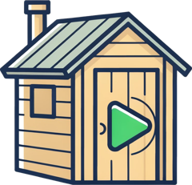

ShedTVTurn a TV into a child-friendly one in a minute. Only the channels, films and series you approve are visible, and everything else stays hidden, including anything your provider adds later.
Kids mode keeps ShedTV child-friendly, but no app can stop someone uninstalling it, clearing its data or opening other apps. Your device's own controls can:
Settings → Preferences → Parental Controls. Turn them on and set a PIN.
Chromecast, Google TV Streamer and TVs with Google TV: add a Kids profile for your child and allow ShedTV in it. Children can't uninstall apps from a kids profile.
Settings → Device Preferences → Security & restrictions → Create restricted profile, then allow ShedTV.
Menu names can differ slightly between devices and software versions. Use a different PIN from your ShedTV one, and keep both somewhere safe.
It's a filter based on how your provider names its categories. If a provider files something in the wrong category, ShedTV can't tell. That's why it's worth checking the ticked list once when you set it up.
At bedtime, or when the day's watching time runs out, ShedTV stops playing and shows a friendly "see you tomorrow" screen until 6am. A grown-up can allow another hour with the PIN. Only time spent watching counts, not browsing.
Clear ShedTV's data in your device's app settings. That removes the PIN along with all your other ShedTV settings, so you'll need to add your subscription again.